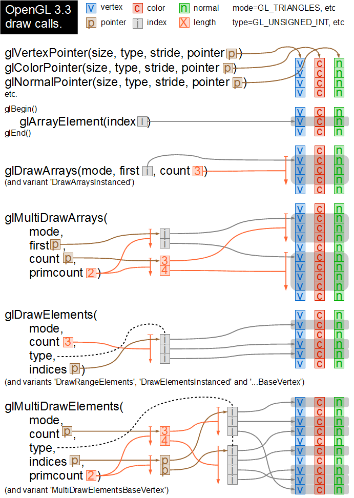

OpenGL Draw API Visualised
To help me grok and remember the OpenGL 3.3 draw API, I drew them in a diagram. I hope this will help me see at a glance what I can and can't achieve with each function call.

I haven't annotated any of the parameter types. These days I tend to be
calling these functions from Python, so generally only care about the
values. Interestingly, the most recent additions to the API, such as
glMultiDrawElements, feature parameters such as
'const void ** indices'. Apparently the OpenGL Architecture Review
Board has also decided that they also no longer care about the types
either. Wise choice. :-)
Updatate: I wanted to publish this diagram as SVG, but apparently these days that works in every browser except IE, surprise surprise.